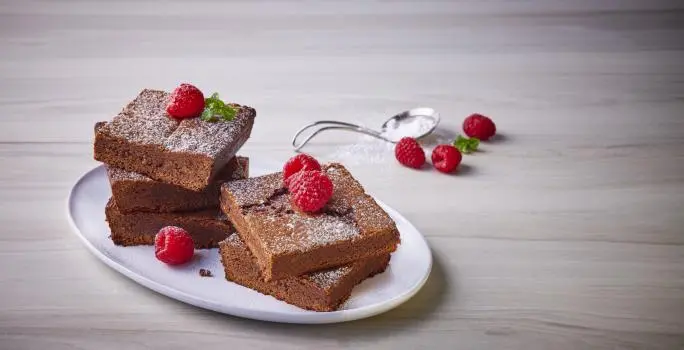

Brownies caseros
La receta es sencilla y queda super bien. Con una consistencia de brownie: esponjoso por fuera y húmedo por dentro. Yo agregué almendras troceadas y trocitos de chocolate y quedó super. Es muy dulce si no eres tan fan del azúcar te recomiendo cambiar el polvo para preparar bebida sabor chocolate por cocoa pura también queda super bien.
CONSEJO NUTRICIONAL
La frambuesa aporta ácido fólico.
CONSEJO CULINARIO
Hornea el brownie el tiempo que indica la receta para evitar que se reseque y endurezca.